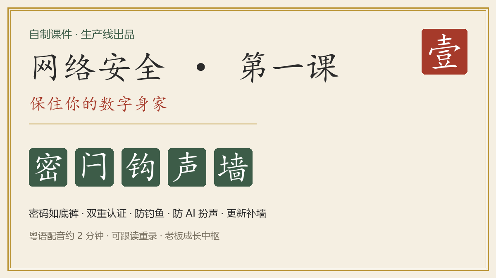

任务栏：该做的、欠着的、等你拍板的
系统每天自动转，但有些事只有你能做。这页是秘书台：按死线排序，做完打钩。情报部每周随经营会更新这张单子。
真话时间：浏览器语音转文字 + 内置人声，零成本。要真正双向实时通话，用 Kimi App 嘅语音功能——呢条桥系过渡。
死线加载中…
📰 实时快讯
不用等每晚的简报——这一栏每次打开都去源头现抓，坐着不动，新闻自己来。
📺 直播台
港、澳、国际新闻的官方直播窗口。画面黑 = 现在没直播，不是坏了——点频道名进去看回放。看到大事，复制标题去「五问」拆它。
诚实交代：珠海本地台没有可嵌入的直播源（观海融媒只在自家 App 播）——珠海动态看快讯的「珠海横琴」筛选。直播内容要解读？复制标题丢进「五问」或「AI 教练」。
🔍 今日深读
每晚 18:33，情报部门把六个领域扫一遍：完整报告发在对话里（那是简报），这里只放浓缩卡片（这是深读）——每条挖五层：发生了什么、钱往哪流、别人没看到的连带效应、对你意味着什么、一个可以被时间检验的判断。出现专业名词，一定配一句人话解释，看不懂的名词就是情报部门的失职。
📖 深读卡片（要慢慢睇嘅喺呢度）
🎯 机会雷达 · 实习培训申报死线
劳工局、横琴、华为的培训/实习/扶持计划，带截止倒数、申请条件、补贴金额。过期不候——每晚简报自动扫一遍更新。
⚔️ 练兵场 · 看完要会用
资讯不练就是装饰。三关全部用今天的新闻自动生成，每天跟着雷达换题——练的是老板三样基本功：分辨信息等级、一句话讲清一件事、把新闻变成自己的判断。
遮住出处猜等级：这条新闻是一手原文、记者加工的媒体稿、还是谷歌机器聚合的二手货？猜 8 条，练你的信息嗅觉。
只看标题，你写一句话讲清「发生了什么+钱往哪流」，再跟情报部门的版本对比——写不过它就练到写得过。
把今天的新闻变成你的判断：写下你的答案，系统自动存进你的笔记库，月底回看就是自己思维的进化史。
▶️ 视频课
眼睛累了就换视频。前两个点开直接播，后面的是值得长期追的频道。划线：这里只管「现在就点开看」；长期订阅源在「信息渠道 · 一手频道」，两边不重复。
日语入门 · 汉字圈最快拿下的外语
日语常用汉字约六成与中文意思相近，你是带着加速器起步的。路线：五十音（1 周）→ 出口仁 N5 语法（每天 1 集，4 个月）→ N4。日语是你的第二外语，也是未来 TTS 产品出海的第一站。
粤语实战 · 你的赛道同行在做什么
这些视频的存在本身就是情报：粤语 TTS 对比测评有人看、有人做、有几十万播放——需求被验证，但还没有人做成体系。

🌉 老板生活圈
老板的谈吐和审美不是看书看出来的，是泡出来的。这里只放澳门、珠海、横琴够得着的展、馆、会，按闭展倒计时排序——快闭展的排最前，过期的经营会每 48 小时巡检下架。每条都配「老板视角」：为什么值得你去、去完能带走什么。去过的展才算自己的，收藏的展只是消费。
来源：open.er-api.com 免费接口，打开本页自动刷新，读不到不影响看展。
夜班收工别顿顿便利店：超市晚间熟食常有折扣（时段以各门店公告为准），自己带饭一周，省下的钱够看两个展。
见客户、去摆摊，有一套干净利落的「战衣」就够——利落比名牌有说服力。
横琴租金普遍低于澳门核心区，但先算时间账：通勤+口岸排队值不值那个差价（具体租金以实地为准）。
夜班往返盯紧末班车：把轻轨/巴士末班时刻截图存手机；横琴口岸 24 小时通关兜底。
生活圈加载中…
🧭 全部功能
27 个板块按「厅」分好了：先看世界（情报局）→ 秘书台（指挥中心）→ 每天练（练功房）→ 系统学（学习院）→ 想生意（商战室），生活圈系后勤。信源、武器库呢啲后台水管唔摆上门面。唔使全点——日课喺练功房，其他用到先入。
这些模块不是列表，是一条流水线
输入：实时快讯 · 信息渠道 · 视频课 → 拆解：五问 · AI 教练 · 思辨 · 鉴别风口 → 吸收：高手拆解 · 同行雷达 · 公司生死簿 · 政策与风浪 → 输出：口才 · 粤语对练 → 复盘：今日修炼打卡 · 回顾（记忆曲线）· 预测对答案
系统的自我迭代：每晚 18:33 简报自动生成、更新深读；每 48 小时经营会巡检全站、发现问题就修。网站和你一样，每天长一点——你练的是判断力，它练的是服务你的能力。
今日修炼
前瞻性没有捷径，就是每天攒一点。7 件核心日课 + 1 件轮修，做完一件勾一件——全部勾完，今天才算收工。断一天，连击清零，重新来过。
- 优先 ① 三餐播报 + 快讯扫一遍（约 15 分钟）——先知道今天世界变了什么，重点新闻都在里面
- 优先 ② 口才对练开口 3 分钟——讲出来的才算学会
- 次要 ③ 五问拆解一条重点新闻——把新闻变成判断
- 次要 ④ 书籍库 / 学习 20 分钟——长线积累不断粮
- 选做 ⑤ 生活圈逛一眼——有快闭展的就排进休息日
优先两件做完就算赢，次要做一件赚一件——全做完是 bonus，不是义务。
训练闭环：这不是五个模块，是一条流水线
在任何一个模块里完成动作，下面的日课会自动打勾——系统是连着的，练的是同一条思维回路。
每周轮修：七条支线，一天一条，不用想，照做
核心日课练天天都要的基本功；轮修把「什么都懂一点」拆开排到一周七天——金色边框那条就是今天该做的。
思辨训练：五问 · 六视角 · 对照台
普通人看新闻看热闹，老板看新闻看钱、人、势。看到任何一条新闻，用这五个问题过一遍——坚持 90 天，你的判断力会脱胎换骨。存下的笔记会自动排进 「回顾」的记忆曲线，到期翻出来考你。
🔬 六视角思辨：一件事戴六顶帽子
一件事，六个视角（思辨体操）
它的论证链条是什么？前提成立吗？有没有偷换概念、以偏概全？
样本多大？是相对数还是绝对数？「增长 100%」可能是从 1 涨到 2。永远问：基数是多少？
谁说这话？他从中得到什么？专家、媒体、政府、厂商——每个立场都有动机。
这是短期噪声还是长期趋势？三年后回看，这事还重要吗？
如果我是反方，最强的反驳是什么？能在心里替对手辩论，才算真正懂了。
想清楚之后：这改变了我的哪个决定？没有行动指向的思考只是消遣。
统计防骗三问（看到任何数字先问）
① 谁数的？「市场规模百亿」——是卖报告的机构说的，还是独立审计的？
② 跟谁比？「效率提升 50%」——从多低的基数提升？对照组是什么？
③ 没说的是什么？平均值漂亮，分布可能很难看。正态分布之外的极端值，往往才是风险所在。
思辨的日常练法：每天从「信息食谱」里挑一条新闻，用上面六个视角各写一句话。三个月后，你不会再被任何单一叙事牵着走。
🪞 观点对照台：他们说 vs 我们说
「AI 会抢走所有工作」
他们说：AI 一来人人失业，评论区一片焦虑。
我们说：AI 取代的是重复，不是判断。就业公式 = 重复交给系统，人做判断、担责、共情。我们每做一个产品就要造一类新岗位：语料标注师、跟读教练、防伪审计员。
「粤语 TTS 没市场，所以大厂不做」
他们说：小语种不赚钱，大厂不碰就是证明。
我们说：2026 年三篇主流论文（OmniVoice、FireRedTTS3 等）都公开承认粤语是短板——不是没市场，是没人肯啃硬骨头。《从0到1》：垄断从被忽视的小市场开始。
「AI 语音 = 诈骗工具，该禁」
他们说：AI 变声害人，喊打喊杀。
我们说：问题不在声音，在不可追溯。菜刀伤人不靠禁菜刀，靠实名制和溯源。防伪水印 + 行业标准（欧盟 AI 法 Art.50 已强制标识）才是解药——这正是我们的生意。
「机器评分就是权威」
他们说：AI 评分客观，照着练就行。
我们说：机器也会错——粤语懒音、口音变体经常被误判。双引擎交叉 + 人耳终审。质疑精神，首先包括对机器的质疑。
入库流水线（没有「我们说」的观点不准入库）
抓到观点→写下「他们说」
来源+日期→逼写「我们说」
写不出 = 没资格收→定验证方式→到点对答案
接「预测对答案」
AI 教练
思维模式不是写出来的，是练出来的。贴一条你今天看到的真新闻，教练一轮一问带你拆——你先答，教练再示范，最后教你一句提示词，拿真 AI 继续深挖。思考的过程，我们一起走完。
信息渠道
楼上的实时快讯和深读每天自动送到；这里是想自己动手挖时的渠道库（长期订阅）；想「现在就点开看」的课在视频课——AI、澳门政策、金融、同行、一手频道，全按一二三手分好级。记住一条：三手信息只能当线索，不能当依据。
捕获 → 分级 → 判断 → 归档，四步闭环
① 捕获：每晚 18:33 的「每日老板简报」自动把五个领域扫完送上门——你只需要读；白天有时间再到下面的分类源深挖一个点，只记让你「哦？」一下的。
② 分级：按一手 / 二手 / 三手打标签——三手信息只能当线索，不能当依据。
③ 判断：每天挑最重要的一条过「老板五问」，写下你的判断。
④ 归档：判断和素材存进本地知识库（digests/ 文件夹）。每周复盘时回看——信息只有被回看才变成资产，否则只是消费。
顺藤摸瓜：好博主的信源，才是你的信源
摸到出处：靠谱博主说「研究表明」「数据显示」时，一定会给出处链接——点进去，读原文，从此以后你只引用原文，不引用他。他帮你筛选，你拿走源头。
摸关注列表：在 X / YouTube 上找到一个一线人物，别急着刷他的推文——先看他关注了谁、转发了谁。大牛的关注列表就是现成的雷达图，顺三层，必到源头。
摸论文：任何「AI 新突破」的新闻，搜标题关键词 + arXiv，30 秒找到论文原文。看摘要和结论就够，你不需要读懂公式，只需要知道「谁做的、做到了什么、没做到什么」。
摸到自动：把溯源找到的一手源全部塞进 Feedly，再在 Google Scholar 设几个关键词快讯。从此雷达自动转——别人刷算法喂的，你收自己选的。新增「溯源与人」分类（下面标签页里），人手和工具都给你备好了。
行情与大事
老板看股市不为炒股，而是为了读懂行业的温度计。芯片股涨、AI 股跌、某公司 CEO 传出新闻——每一条都在告诉你钱在往哪里流。下面是你的行情入口和一套「大事解读链条」。
大事解读链条：一条 CEO 新闻，老板要想到第五层
发生了什么？消息来源可靠吗？（例：某芯片巨头 CEO 传出负面新闻，当日股价下跌）
市场第一反应是恐慌还是无视？跌的是公司本身，还是整个板块被连累？
这家公司在产业链的什么位置？它打喷嚏，谁跟着感冒——供应商、客户、竞争对手？
三个月后这事还重要吗？多数丑闻是噪声，技术路线和订单才是信号。
对我的粤语 TTS 计划有什么影响？芯片涨价会不会推高语音合成的算力成本？竞争对手动荡是不是我挖人的窗口？
假设案例：「某 AI 芯片巨头 CEO 传出丑闻，股价单日跌 5%」
普通人看到：八卦和热闹。
股民看到：要不要抛？
老板看到：① 丑闻会不会动摇大客户对这家公司的信任？② 它的竞争对手会不会趁机抢订单？③ 如果芯片供应链波动，我未来买算力的成本会不会变？④ 这家公司动荡期间，它的语音团队人才会不会流动——我能不能接触？
记住：个人丑闻类新闻 90% 是短期噪声，老板只关心它是否改变了钱、人、技术路线这三件事的走向。
AI 工具
未来的老板不是自己什么都会，而是最会调用 AI 的人。每个平台都有脾气，用对场景，一个夜班打工人可以撬动一个小团队的产出。
Hugging Face ↗
全球最大开源模型社区，TTS 模型（GPT-SoVITS、CosyVoice、Fish Speech）都在这里。
扣子 Coze ↗
字节跳动的零代码 AI 应用平台：不写代码就能把 AI 能力包成一个可用的小应用/机器人。
NotebookLM + 开源调用 ↗
谷歌的 AI 笔记本：把资料丢进去，它读完随便你问。开源项目 notebooklm-py（2 万星）让你用脚本批量管理文献、常驻人设——比网页版手动操作强一档。
Horizon ↗
1.4 万星的开源情报雷达：RSS、Hacker News、Reddit、X、GitHub 全抓，AI 筛选后出中英文日报，自动去重。核心玩法是「Profile」——你告诉它看科技新闻要背景、看长文要方法论。
VideoDigestAgent ↗
监控你关注的 YouTube 博主：出新视频自动语音转文字、AI 总结、邮件推给你，可按关键词和播放量过滤。用 Gemini 免费额度就能跑。
调用 AI 的三条铁律（未来十年的核心竞争力）
一、给背景，不给空题。「帮我写方案」是废指令；「我在澳门做粤语 TTS，目标客户是中小学，预算 5 万，帮我写一页合作方案」才是老板的指令。
二、让 AI 质问你。「请扮演投资人，找出我这个想法的 5 个漏洞」——会用 AI 挑自己毛病的人，进步速度是别人的三倍。
三、AI 给草稿，人做判断。AI 可以写 80%，但最后拍板、核实事实、承担责任的永远是你。这正是「不丧失思考能力」的边界。
口才与粤语对练：每天开口 3 分钟
能言善辩不是天赋，是肌肉记忆。这里一页练两样：上半页练口才框架（普通话/通用表达），下半页练粤语实战（主播播报+AI考官对练）——规则不变：抽题、录音、回放、找一个毛病。每天开口，一年 365 次。
万能表达框架：PREP（30 秒说清楚一件事）
🗣️ 粤语对练：做 TTS 的人，先当声音的内行
每天用粤语开口练——既提升对话能力，又从用户视角理解「什么声音才算好」，录下的音频还是将来自家声音模型的第一批素材。
听：这段播报从头到尾没有真人
写稿 → AI 合成 → 发布，一条流水线走完。这段是国语示例，用的还是通用声音——换成地道粤语、换成你调教的声音，就是你要做的产品。听的时候顺便用体感评测的五个维度给它打个分。
以后每晚的简报也会配上这样的音频版——你听它的过程，就是在收集体感数据。
今日播报 · 做 60 秒新闻主播
从今天的情报里挑一条新闻，用粤语像电台主播一样播出来，录音。
🤖 AI 考官 · 它出题，你接招
规矩：抽题 → 60 秒回答（下面就有录音）→ 回放对照量规 → 点「找 Kimi 评分」。题库已合并：通用考题 + 粤语突发情景（原「今日会谈」已并入这里，一页不再重复出题）。想要连环追问？点「复制考官口令」发给 Kimi 实时对练。
📢 朗读台 · 每晚一篇老板分享稿
每晚简报自动从当天最重要的新闻里提炼一篇老板视角分享稿，附上「我是怎么分析的」五层拆解——你照着念练嘴，看着拆解练脑。念完就在下面录——录音按钮已搬到稿旁边，跟着文稿往下拉着读。
🗃️ 语音数据集 · 管理台
录音已经搬到上面每张练习卡里（今日一练/60秒主播/AI考官/朗读台，就地就录）。这里是仓库：回放、下载、导出你的全部录音——每条都标了来自哪个练习，三个月就是 90 条带标注的声音资产。下面这个录音键是「自由麦」，不设题目随便录。
回放听两遍：第一遍当学习者——数语气词（嗯、嗰个、即系）、听语速均不均、句尾有没有降调；第二遍当产品经理——问「这段若是 AI 合成我会挑什么毛病」，你挑出的每个毛病，就是产品要解决的清单。
自我管理：身体 · 精力 · 气质
公司可以倒闭再来，判断力垮了就没有翻盘的本钱。对夜班打工人来说，睡眠和体能不是养生，是保生产力的战略投资——大脑缺氧 1 小时，做的决定就要用 10 小时来弥补。
睡眠：唯一不可妥协
夜班后固定睡满 7 小时，遮光窗帘 + 耳塞 + 手机飞行模式。睡前 1 小时不碰短视频——那是判断力最大的小偷。
运动：给大脑供血
每天 20 分钟快走起步，每周 1 次徒手训练（深蹲、俯卧撑、平板支撑各 3 组）。不为身材，为下午学习时大脑不宕机。
饮食：稳定血糖
夜班中少吃精制糖和油炸，备坚果和水。血糖大起大落时做的决定，第二天多半会后悔。
大事不过夜疲劳时
重要决定（辞职、投资、签协议）只在睡醒后的黄金 2 小时内做。疲惫时的「果断」多半是冲动。
防退化：AI 时代的思考肌肉
AI 给草稿，人做判断。每天留一件「不让 AI 碰、自己想透」的事——比如今天的五问笔记，先自己写，再让 AI 挑毛病。
复盘：每周 30 分钟
回看本周的五问笔记和学习记录：哪些判断对了？哪些错了？老板的认知就是在一次次对答案中升级的。
嗓音：你的生产资料
做 TTS、练口才、录素材，嗓子就是设备。每天开工前 5 分钟哼鸣开嗓；多喝温水，少喊；连续录音 40 分钟必须休 10 分钟——声带损伤是不可逆的。
眼睛：夜班的第一损耗
屏幕 20 分钟，看远 20 秒（20-20-20 法则）；夜间屏幕色温调暖。眼睛累的时候做的第一件事是休息，不是硬扛。
工间微运动：不求健身卡
夜班每隔 2 小时起身 3 分钟：靠墙站、转肩、踮脚。夜班族的腰椎和颈椎就是这么保下来的——频率比强度重要。
体检：每年一次，四项必查
血压、血糖、肝功能、甲状腺。澳门卫生局和镜湖都有体检套餐，几百澳门元买一份安心——你的身体数据就是你公司的资产负债表。
🎯 精力分配：什么自己抓，什么借力
必须精通（老板的命根子）
这些决定了公司生死，别人替代不了你做判断。
读懂新闻背后的利益结构。工具：本页「五问法」，每天一条，雷打不动。
融资、招人、谈客户全靠一张嘴。工具：下方「口才训练」的 PREP 框架，每天开口练 3 分钟。
你做的是粤语 TTS——必须亲手做过 Demo、亲自访谈过老师和用户。可以不懂算法细节，但必须知道这项技术能做到什么、做不到什么。
看得懂三张表（损益、资产负债、现金流），算得清一单生意赚不赚钱。不需要会做账，需要会问会计问题。
可以借力（知道找谁、怎么验收）
这些你只要懂框架和标准，执行交给别人或 AI。
用 AI 辅助写代码、用开源模型（GPT-SoVITS、CosyVoice）搭 Demo。你验收结果，不亲手造轮子。
知道澳门公司注册、横琴政策申请找哪个部门、问什么问题即可，具体交给专业人士。
早期全部可以用 AI + 模板解决。你的审美要求是「干净可信」，不是「惊艳」。
英语学到能谈生意（雅思 6.5），葡语学到能打招呼读政策标题。深度翻译交给工具和译员。
👔 气质表达：老板范儿可以练
看山三境：认知的三层楼
看到什么信什么。新闻说行业火就冲进去，老板画饼就拼命。大多数人在这一层——信息喂什么吃什么。
开始拆解：这件事背后是谁的利益？数据有没有水分？政策为什么这个时候出？「思辨认知」模块训练的就是这一层。但停在这层的人会变成愤世嫉俗的「杠精」——什么都看穿，什么都不做。
看透之后返璞归真：知道世界复杂，依然能把一件复杂的事用一句话讲明白、带着人往前干。真正的睿智不是显得深奥，而是深入浅出——能把 TTS 的技术路线讲给澳门的阿婆听懂，才算到家。
气场是练出来的：四个可训练项
身体：气场的地基
不需要练成健美先生，但要站得直。每天靠墙站 5 分钟（后脑、肩胛、臀、脚跟贴墙），三周后体态肉眼可见地改变。含胸驼背的人说话没人信，这是生理，不是玄学。
声音：低音、慢速、停顿
领导人的共同特征：语速比常人慢 20%，句尾降调，敢停顿。练习：每天朗读一段新闻，录音回放，把「嗯、然后、就是」数出来，目标是清零。
眼神：稳定的注视
说话时看对方眉心，不飘不躲。紧张就看鼻梁。这一条在谈客户、面试员工时价值千金，在家对着镜子就能练。
着装：干净的制服感
不需要名牌，需要「稳定」：固定两三套干净合身的搭配。乔布斯的黑毛衣不是懒，是把决策精力省下来给公司。
语言魅力：讲故事的人领导讲道理的人
要做
有魅力的表达长这样
不说「市场很大」，说「澳门每间补习社都还在用人工录音」。
「全球 8000 万粤语使用者，主流厂商的粤语支持不到普通话的三成」——数字自带权威感。
万能结构：困境 → 转折 → 行动 → 结果。「我夜班下班那天，听到两个学生在听 AI 读课文，粤语全是错的——那一刻我知道这事能做。」
说完重点停两秒，让对方消化。急着填满沉默的人，显得心虚。
不要做
这些话一出口，气场就塌了
老板可以承认困难，但永远附带解决方案。「很难，但我们这样打」和「太难了没办法」，是两个物种。
被质疑时先复述对方观点（「你的意思是……」），再回应。急着辩解的人显得怕输。
「这个问题我不确定，查实后明天答复你」比硬撑的回答有魅力十倍。睿智 = 清楚自己不知道什么。
说出口的就是债。宁可少承诺、多兑现，信用是老板唯一的抵押品。
教导力：老板的最高境界是当老师
你能把多少人教明白，就能领导多大的公司
费曼检验法：学完任何东西，试着讲给一个完全不懂的人听。讲不明白的地方，就是你没真懂的地方。这和「看山还是山」是同一件事——深入浅出是最高级的懂。
日常练法：每周把学到的一个概念（利率、TTS 原理、一个政策）用 3 分钟讲给朋友或家人听。对方听懂了，你晋级了；对方走神了，回看是哪里讲得不像人话。
为什么这对你的 TTS 事业是双料投资：你要做的产品是「AI 教人学语言」，而你自己先成为「会教的人」——教育产品的灵魂，永远是教育者的认知。
📚 仓库：书籍、素材、金句——调研和学习的血肉
骨架搭得再多，没有书垫底就是空架子。这里每本都是核实过的真书，按你的赛道分好，每月一本，一年 12 本——夜班人的节奏，不贪多。澳门公共图书馆和微信读书基本都能借到，标注「免费公开」的网上直接看。
底层逻辑（先长脑子）
商业与战略（你的缝隙理论课本）
AI 与技术（研究者的地基）
《Speech and Language Processing》 ↗
Jurafsky & Martin。语音与语言处理的标准教科书，第三版草稿网上免费公开（web.stanford.edu/~jurafsky/slp3/）。TTS、语音识别、韵律建模的章节就是你的技术地图。
《深度学习》 ↗
Goodfellow。deeplearningbook.org 免费公开。不从头读，概念模糊时回来查。
学习科学、语言与传播（产品的里子）
《认知天性》 ↗
Make It Stick。学习科学：为什么「测试+间隔+跟读」比「看课」有效十倍——你的打卡、跟读重录、练兵场全是照它的原理设计的。
读懂中国、澳门与创业
📦 素材库：语料、文化、语言
一、语音与语料弹药（TTS 公司的命根）
香港电台 RTHK ↗ · 澳门 TDM ↗
标准粤语广播音频：新闻、访谈、戏剧——研究发音、韵律和语气的活教材。
语料合规：小公司最容易死的地方
网上的音频不等于可以拿来训练。三条路是安全的：① 开源许可允许商用的数据集；② 自己录（找澳门本地人录音并签授权，顺便建立你的独家语料库）；③ 和机构合作换数据。谁拥有合规的独家粤语语料，谁就拥有别人抄不走的护城河。
二、文化素材：TTS 的灵魂不在技术，在语境
为什么要懂本地文化
机器合成的声音技术上完美，但澳门阿婆一听就知道「不是我们的人」
粤语问候、敬语、语气词（嘅、喎、啫）的使用场景，决定合成声音「地不地道」。
茶餐厅文化、粤剧、赛马、节庆——教育内容和广告配音里全是这些梗，不懂就做不出共鸣。
港乐、港片、栋笃笑是粤语语气的黄金样本——黄子华的停顿和节奏，就是最好的韵律课。
怎么积累（每天顺手做）
文化素材靠攒，不靠找
听到地道的说法、精彩的语气，立刻记进手机备忘录——一年后这就是你的内容弹药库。
带着任务看：这个人的语气节奏为什么抓人？记下三点。
阿婆的粤语和学生的粤语是两种语言——你的产品要说哪一种？这是产品定位问题。
三、多语言布局：每门语言都是一条产品线
差异化根基。你懂的文化和语料，大厂懒得做。
教育市场的最大需求（学生学普通话），用成熟开源模型即可，你提供的是场景不是技术。
雅思 6.5 不只是证书——它让你能读论文、谈海外客户、用国际工具。TTS 产品同样要吃语言学习的刚需。
中葡平台是国家给澳门的定位，全球 2.6 亿葡语人口。全世界做「粤语+葡语」语音产品的人屈指可数——这是只有站在澳门才能打出的牌。
四、跨学科知识储备：考它不为当官，为长脑子
公务员考试内容 → 政策理解力
不当公务员也要学，因为它教你看懂政府怎么运转
行测的逻辑推理、申论的政策分析——正是读政策文件、写资助申请书需要的能力。申请澳门科技基金、横琴资助时，写材料就是一场申论考试。
传媒视角 · 传播学 → 产品表达力
懂传播的人做产品，天然会讲故事
受众是谁、框架怎么定、情绪怎么调动——B站搜「传播学 公开课」免费学。你的 TTS 产品本质是「声音的传播」，传媒训练让你比纯技术团队更懂用户。
法学常识 → 公司护身符
不用考证，懂框架就行
合同法、著作权法（你的语料合规）、公司法（注册与股权）。遇事知道「这里要问律师」，比自以为懂强一百倍。
教育心理学 → 产品的里子
做教育产品的人必须懂人怎么学
遗忘曲线、间隔重复、最近发展区——B站搜「教育心理学 公开课」。这些直接决定你的语言学习产品怎么设计。
怎么把这些攒成「自己的资料库」
工具从简：一个笔记 App（flomo / Obsidian / 甚至微信收藏）就够了，工具不重要，规则重要。
三条规则：① 凡是让你「哦？」一下的东西，立刻记一条，写明来源和日期；② 每条素材打标签：语料 / 文化 / 政策 / 商业 / 灵感；③ 每周日花 20 分钟翻一遍本周的素材——资料库的价值不在收藏，在回看时产生的连接：一条文化素材 + 一条政策 + 一个技术能力 = 一个产品点子。
🎲 粤讲粤过瘾：每日一句广东话
工具让人用一次，文化让人天天来。这些金句是澳门街头巷尾的活语言——每条配真机生成的粤语音频，能听、能学、能跟着念。这也是你的产品预告片：未来的粤语 TTS，播的就是这种东西。
让粤语重新变「潮」：AI 文化飞轮
历史的证据：韩语靠韩流、日语靠动漫崛起——语言从不靠课本崛起，靠「想懂那个内容」的冲动。粤语自己就验证过：八九十年代港片港乐让全中国主动学粤语。浪潮退了，粤语才退回方言。AI 给你的杠杆：以前做内容要一个电视台，现在一个人就能量产。
飞轮五步：① 内容钩住人（金句、粤语梗、AI 短视频）→ ② 玩法留住人（跟读挑战、配音游戏）→ ③ 社区放大（用户晒作品、互相考）→ ④ 数据沉淀（每条授权跟读都是语料）→ ⑤ 产品收钱（教育、粤配、授权）。
为什么别人抄不走：韩语 APP 只是消费韩流，而你的社区玩法直接生产语料——用户玩得越开心，TTS 越准，对手越追不上。
顺序警告：社区需要冷启动。先做「一人媒体」持续出内容攒同好，再开社区——社区是果，内容是因。
🧰 技能武器库：工欲善其事，必先利其器
以下每件武器都于 2026-11-19 经 GitHub 官方接口当场核验，星数真实、链接可点、一件都不编。原则：每个领域只认一件主武器，用熟了再扩展。
💻 开发学习（你的主战场）
⚡ 效率办公（自动化即员工）
🎨 创意设计（内容的皮相）
awesome-design-skills ↗
67 个写给 AI 用的设计技能文件——AI 时代的设计不是手画，是把品味写成规则喂给 AI。
🧊 3D 生成（文化输出的炮弹）
DreamCraft3D ↗
一张图片变成 3D 模型，DeepSeek 官方实现，ICLR 2024 论文。
🔬 研究情报（知己知彼）
🎬 自制课件：我们自己的内容生产线
做博主不能只做搬运工。每一课都是一鱼四吃：雷达抓料 → 深读成稿 → 粤语 TTS 配音 → 上线开课——同一份东西，是你的学习材料、我们的内容资产、TTS 引擎的实测场、和未来课程的样品。

第一课 · 网络安全：保住你的数字身家
为什么第一课选网安：你点名要「黑客能力和防范」；而且第四招就是 AI 语音诈骗——我们防伪水印事业要打的仗，先在你身上练一遍。
📜 打开粤语对稿（跟读用，练口才 + 验 TTS 一鱼两吃）
欢迎收睇老板成长中枢自制课件，网络安全第一课：保住你嘅数字身家。今日唔讲高深理论，净系教你五招保命基本功。第一招，密码就好似底裤，唔好同人共用，唔好一个地方用到晒，装个密码管理器帮你记。第二招，开双重认证，等于多一道门闩，最好用验证器 App，唔好净靠短信。第三招，钓鱼链接专扮熟人，任何链接停三秒，睇真网址先好㩒；记住，官方永远唔会问你要验证码。第四招，而家 AI 可以扮你老细、扮你屋企人把声嗌你转账，应对方法好简单：挂断，打返去原本个号码亲口确认。呢个正正系我哋做防伪水印要解决嘅行业痛点。第五招，公共 WiFi 唔好办正事，手机电脑系统更新唔好拖，更新就系补墙。学好呢五招，你已经叻过九成网民。我哋下一课见。
🩲 密码是底裤
不与人共用、不各处重用、不写在明处。装一个密码管理器（如 Bitwarden，免费）帮你记。
🚪 双重认证是门闩
重要账号全开 2FA。优先用验证器 App，少用手机短信——短信能被截。
🎣 钓鱼专扮熟人
任何链接停 3 秒，看清网址再点。记住铁律：官方永远不会问你要验证码。
🤖 AI 扮声诈骗
听到「老板/家人」的声音叫转账：挂断，打回原本号码亲口确认。声音能伪造，追溯才是解药——这就是防伪水印存在的意义。
🧱 更新就是补墙
公共 Wi-Fi 不办正事；手机和电脑的系统更新不要拖——每个补丁都是在堵已知的洞。
课件生产线 · 排产表
🎣 钓鱼与社工拆解
从雷达抓真实钓鱼案例，拆给你看骗子的话术结构。
💧 AI 语音诈骗与防伪水印
AudioSeal、C2PA、欧盟 AI 法——我们的护城河怎么建成行业标准。
🔊 TTS 入门实操
配合「TTS 入门」模块，从听懂到亲手合成第一句粤语。
📚 TTS 自修书架：由听人讲到自己造（2026-11-21 雷达档精选）
Qwen3-TTS 粤语配方 ↗
Qwen3-TTS 香港粤语声音全流程：选数据→清洗→LoRA 训练→烘焙→转换，Apache-2.0 免费商用。
粤语 CC0 TTS2 配方 ↗
同一作者第二套：用 Kitten-TTS 2 由 Common Voice 原始数据自建粤语声。两套对照睇，就知咩叫「可复现基线」。
WenetSpeech-Yue（AAAI 2026） ↗
首个大规模多维度标注粤语语料库，被引 26。做粤语语音绕唔开嘅地基。
SenseVoice ↗
开源语音识别（ASR），支持粤语。合成系把声，识别系对耳——我哋嘅 ASR 质检尺就系用呢类引擎起嘅。
我哋自己嘅教材
tts_qa.py 质检尺（亲手造嘅验证闭环）+ 小Lin说口播拆解（高手框架拆解）+ 三餐播报流水线（每日实战）。
🧭 社区与定价：人在哪、痛在哪、钱怎么算
2026-11-19 实地调研（GitHub Issues、网易、CSDN、各厂官网定价页多源交叉）。社区不是发广告的地方，是先蹲三个月听吐槽的地方——抱怨集中在哪，需求就在哪。
GitHub Issues = 痛点排行榜
GPT-SoVITS 光 open issues 就有 900+ 条，按 👍 排序就是用户痛点榜。真实吐槽：新手十大坑（CUDA 爆显存、参考音频格式不对、长文本卡顿）、情感切换要手动换参考音频。
Discord 官方群
GPT-SoVITS、Fish Audio 等项目 README 里有邀请链接。里面天天有人发对比音频、晒踩坑。
Reddit r/Cantonese
全球粤语学习者大本营：吐槽教材、晒打卡、问发音。（雷达直连被 403，浏览器直接逛。）
B站 / 小红书评论区
搜「粤语教学」「TTS 教程」，别看视频看评论——抱怨在哪，需求在哪。老师聚集在教师类公众号和小红书教师圈。
「唔该」读成「唔改」，自己听不出来 → 我们的跟读双引擎评分，治的就是这个。
背了一肚子词，茶餐厅点餐开不了口 → 场景对话练习治这个。
三天打鱼两天晒网 → 金句打卡、每日轮换治这个。
多邻国粤语课的粤拼输入让人抓狂（要频繁切键盘）——输入、识别、合成、评测，粤语全链路都缺好工具，这就是我们的全链路机会。
TTS 行情表（每百万字符，2026 下半年，多源交叉，以官网为准）
$4–20 / 百万字符
Grok TTS $4.2、SpeechifyAI Simba $6-10、Google 标准档 $4、OpenAI $15、Azure $15（每月送 50 万字符）、阿里云 Qwen-TTS $14-20。
$100-300
ElevenLabs 最贵，但 2026 年已降价 55% 推 Flash 版——价格战已经打到高端。
免费层很厚
讯飞每月 10 万字符永久免费；腾讯云基础音色 800 万字符免费；火山、阿里约 ¥4-13/百万字符。
正在统一
计费模式向「按字符」收敛；主流价格带 2026 年底下探到 $10-20/百万字符；开源（Qwen3-TTS、CosyVoice3）音质已逼近商用。
我们的打法（写死）：① 不做 API 转售——中转站已是红海，赚差价没有护城河；② 底座开源自部署——零边际成本，不被价格战绑架；③ 卖「粤语」不卖「语音」——价格战打的是普通话产能，我们卖的是别人没有的；④ 警惕隐藏成本——云端音色退订即失效，自有音色 + 自有语料才是带得走的资产。
TTS 入门课
做一行先要懂一行。这一页是粤语 TTS 的入门真知识——读完你能听懂行内人聊天，也能判断别人是不是在忽悠你。
第一课：TTS 是怎么把文字变成声音的
一句话：让机器完成「看懂文字 → 决定怎么读 → 发出声音」三件事。
分词 · 注音 · 预测停顿和语气→声学模型
决定每个音的音色、音高、节奏→声码器
把声学特征变成真实声波→语音输出
以前这四步是四个独立部件；2023 年后的端到端模型（VITS、GPT-SoVITS、CosyVoice 等）把它们融合进一个神经网络，效果突飞猛进——这正是你现在入场的原因：技术门槛刚降到普通人够得着，而大厂还没顾上粤语这个细分。
第二课：必懂术语表
和投资人、工程师、客户聊天时会反复出现的词。
第三课：为什么粤语是「难做的缝隙市场」
普通话 4 个声调，粤语学界公认 6 个调类（传统说法九声）。声调错一点，「买」就变成「卖」——合成难度成倍上升。
「你」读 nǐ 还是 léi？香港、广州、澳门口音各有习惯。模型要为谁的标准服务，本身就是产品决策。
港澳日常说话中英混用（「今日个 deadline 好赶」）。中英切换的合成是纯粤语或纯英语模型都做不好的真空地带。
粤语口语字（佢、哋、咗）和书面中文差异巨大。读课文要书面语，做广告要口语——同一引擎要会两种模式。
高质量标注的粤语语音数据远少于普通话。谁能积累合规语料，谁就有护城河——这是你小公司的机会所在。
粤语在主流模型里的真实位置
阿里 Qwen3-TTS（2026 年开源）：官方语言列表为中、英、日、韩、德、法、俄、葡、西、意 10 种——没有粤语。粤语只活在「方言指令」里：CosyVoice / Qwen-Audio-TTS 的复刻音色支持约 20 种中文方言（含广东话），要靠指令参数调出来。
CosyVoice 3（Apache-2.0，可商用）：官方列出 18+ 种中文方言含粤语，支持零样本克隆 + 方言合成——这是你起步阶段最现实的技术底座。
蚂蚁 Ming-omni-tts（开源，16.8B）：粤语方言控制准确率约 93%，但情感控制准确率仅约 47%——「说得对」快被解决了，「说得有感情」还远，教育场景要的感情恰恰在这里。
edge-tts：免费、自带粤语（zh-HK）音色，做原型演示零成本。
结论：缝隙判断被一手资料证实——大厂把粤语当「方言参数」，没人当「主战场」。你的技术路线：edge-tts 做演示 → CosyVoice / Ming-omni-tts 复刻音色做产品 → 独家粤语语料做壁垒。
第四课：教育场景怎么落地（附验证方法）
课文朗读 · 三语教学
澳门学校普、粤、英三语并行，课件配音至今大量靠老师人工录。
验证方法：找 3 位老师，问「如果有人把下学期的课文全部配好音，你愿意付多少钱？」——价格都说得出口，需求就是真的。
语言跟读 · 发音纠正
学生跟读 AI 标准音，慢速、可调、无限次重复。
验证方法：做一个最简陋的网页 Demo 给 10 个学生用一周，看他们会不会主动再用。
特殊教育 · 无障碍
视障人士的屏幕朗读、读写障碍儿童的语音辅助——社福机构有预算，竞争者少。
验证方法：约访澳门 2 家社福机构，问他们现在用什么工具、痛点在哪。
教师减负 · 课件配音
把教师的备课文字一键变成配音课件，省的是老师最缺的嗓子与时间。
验证方法：免费帮 1 所学校配一学期课件，换一封推荐信和真实使用数据。
76 所学校 · 88,135 名学生 · 8,071 位教师
2024/2025 学年：全澳 76 所非高等教育学校（116 个校部），学生 88,135 人（小学 37,403 · 中学 33,734 · 幼儿 15,052），教学人员 8,071 人；有特殊教育需要的学生 3,840 人。横琴方向：2025 年合作区在读澳门学生 844 人，一年增长 63.9%。
老板怎么算这笔账（示范）：假设「课文配音 + 跟读工具」每校每年收 1 万澳门元，拿下 10% 的学校（约 8 所）就是约 8 万年收入——这是「澳门试点」的真实量级；天花板在大湾区 8000 万粤语人口。小市场验证，大市场复制。
再看结构：私立学校 68 所（占 89%），采购决策在校方而不在政府招标——意味着你可以直接约校长谈，不必等标案。这决定你的获客打法是「地推 + 口碑」，不是「投标」。
你的技术底座候选（许可证已逐个核验，看清再上手）
先记住规矩：选型三问——① 许可证让不让商用？② 谁在维护，会不会跑路？③ 粤语效果实测过没有？（Chatterbox 就是反面教材：2026 年 8 月官方停更，公司转型——工具说死就死。）
此表每两周复核一次——许可证变更、模型停更、新王登基都会更新。
测试文本（课文朗读场景）：「各位同學早晨，今日我哋一齊嚟讀呢篇課文。讀書唔係為咗考試，係為咗睇清呢個世界點樣運作。」三个免费粤语音色同题对比，你的任务：逐个听，给每个打 1–5 分，写下哪里不自然——这就是体感评测第一练，也是以后验收所有底座的基准线。
实测记录（2026-11-19 真机）：edge-tts 免费但偶发失败（云龙第一次生成失败，重试才成功）——免费服务的稳定性本身就是痛点。Qwen3-TTS 官方试用远程调用成功，17 秒出活，指令写的是「温柔的广东话女老师」。你的任务不变：四个样本逐个听、打分、写下哪里不自然。另记：粤语专用模型 WSYue-TTS 的官方试用空间当前处于故障状态（CONFIG_ERROR）——学术项目维护不稳，正是商业产品的机会缝隙。CosyVoice 3 实测排队中（官方试用需登录授权）。
你担心的事有现成答案：音频水印技术已经成熟，而且最好的一个免费开源。
· AudioSeal（Meta，MIT 协议免费商用）：给每段 AI 音频嵌入人耳听不出的标记，压缩、转码、加噪音后仍能检出——诈骗电话录音也能验。它还能嵌入 16 位信息：哪一段音频是哪个客户生成的，可以追溯。
· SynthID Audio（Google）：谷歌云 TTS 已自动嵌入，扛得住重新编码。
· C2PA 内容凭证：密码学签名记录「谁生成的」，但容易被抹掉——和水印互补不替代。
· 行业现状=你的机会：现实中大部分 AI 音频（包括 ElevenLabs）没有嵌任何水印，检测还是「法医式」难题。谁先把「每段音频可溯源」做成标配，谁就拿到政府和学校客户的信任票。
· 合规已是硬门槛：欧盟 AI Act 第 50 条 2026 年 8 月起强制「机器可读水印 + 明示 AI 生成」，违者最高罚 1500 万欧元或全球营业额 3%；中国的标识办法方向一致。你第一天就嵌水印 = 入场券 + 卖点，一鱼两吃。
自测：你能向外行讲明白这三件事吗？
① TTS 从文字到声音经过哪几步？② 为什么粤语的 TTS 比普通话难做？③ 教育场景里谁会为你的产品付钱？
讲不明白就回到对应那一课重读——能讲出来，知识才是你的。（把答案录成 60 秒音频，顺便完成今天的口才训练。）
学习与考证：学是为了用，证是为了让人信
做语言生意的人，自己得先有语言凭证。证书不是目的，是敲门砖：投标、谈合作、招人时，对方没耐心听你讲故事，先看证。
你学咗未，唔系靠感觉——数字喺度
呢度嘅每一个数字都系你自己做出嚟嘅：打卡、笔记、拆解、预测、打分。一周数字冇升，就系睇热闹唔系学习。数据全部存喺你部机，秘书台可以一键备份。
今日闭环四步（全程约 30 分钟，夜班前做得完）
今日三个词→ ② 五问拆一条
新闻变判断→ ③ 开口跟读
60 秒主播→ ④ 打分一条
教简报调口味
你嘅词库：每日三个词，一个都唔会再走丢
每日晨报嘅三个词自动存入呢度——呢个先系学习资料：唔系概念，系你一日一日储落嚟嘅资产。温习方式：遮咗释义，睇词讲返出嚟。
每日练习：做嘅题同跟读，一期都唔会走丢
每晚晚报结尾嘅练习（跟读一段 + 模板填空一题）自动存入呢度。得闲返转头做返旧题——记忆靠重逢。
每晚 9 点几基金出净值，自动对——我哋嘅预测路径同真实市场嘅差额，日日改卷。
逻辑推理 第一课：数列规律四步法
课程地图（六课）：① 数列规律（本课） → ② 等差等比与交替数列 → ③ 图形逻辑 → ④ 条件推理与真假判断 → ⑤ 混合题型 → ⑥ 限时模考与错题补课。完成本课全部练习，先好去第二课。
📖 教材：四步搵规律（次序唔好乱）
第一步 · 睇差：相邻两个数相减。差恒定 = 等差数列（如 3,5,7,9）。差唔恒定，唔好停——
第二步 · 睇倍：相邻两个数相除。倍数恒定 = 等比数列（如 3,6,12,24）。
第三步 · 睇位置：系咪平方（1,4,9,16）、立方（1,8,27,64）、或者 n²±k（如 2,5,10,17 = n²+1）。三张台底背熟：1–12 平方、1–5 立方、常见 n²±1/n²±n。
第四步 · 睇组合：以上都唔系，就试「每项 = 前两项之和/之差」，或者隔位分成两列。
进阶备用：差嘅差（二级等差）、差嘅比（差系等比）——练习题入面有，呢两步覆盖公考九成数列题。
👨🏫 例題 3 道（跟住四步法行一次）
例題 ①：3, 6, 12, 24, ？
答案：48
第一步睇差：3、6、12——差唔恒定。第二步睇倍：6÷3=2、12÷6=2、24÷12=2。倍数恒定 → 等比数列，下一位 24×2=48。
例題 ②：2, 6, 12, 20, 30, ？
答案：42
睇差：4、6、8、10——差本身系等差（+2）。呢种叫「二级等差」，通常即系 n² 类：n²+n。下一位差 12，30+12=42。
例題 ③：1, 1, 2, 3, 5, 8, ？
答案：13
差同倍都唔恒定，就谂组合：由第三项起，每项 = 前两项之和。5+8=13。斐波那契系公考常客。
✍️ 練習 5 道（自己先做，对完揿啱/错记账）
練習 ①：5, 9, 17, 33, 65, ？
答案：129
睇倍唔恒定（9/5 唔系整数）。睇差：4、8、16、32——差系等比（×2）。下一个差 64，65+64=129。记住：差嘅差、差嘅比都要试。
練習 ②：1, 4, 10, 22, 46, ？
答案：94
睇差：3、6、12、24——等比（×2）。下一个差 48，46+48=94。同上一题同一家族，连续两题系刻意嘅——规律要变直觉。
練習 ③：2, 3, 5, 8, 13, 21, ？
答案：34
组合类：每项 = 前两项之和。13+21=34。斐波那契移位版。
練習 ④：1, 8, 27, 64, ？
答案：125
立方数列：1³ 2³ 3³ 4³，下一个 5³=125。平方、立方、n²±k 三张台底要背。
練習 ⑤：2, 5, 10, 17, 26, ？
答案：37
睇差：3、5、7、9——等差（+2）。即 n²+1：1²+1=2、2²+1=5……下一个差 11，26+11=37。
⏱️ 自測 3 道（计时，模拟考场）
自測 ①（限时 30 秒）：7, 14, 28, 56, ？
答案：112
等比 ×2。呢题 5 秒应该搞掂——搞唔掂返去读教材第二步。
自測 ②（限时 30 秒）：4, 9, 19, 39, 79, ？
答案：159
差：5、10、20、40——等比×2。下一个差 80，79+80=159。
自測 ③（限时 45 秒）：3, 4, 7, 11, 18, 29, ？
答案：47
组合类：每项 = 前两项之和。18+29=47。
掌握标准：练习 5 道啱 4 道 + 自測 3 道全啱 → 可以上第二课。唔达标：错题抄入五问笔记，听日再做一次。你嘅啱错记录会存喺做题记录入面。
公务员综合能力 30 题（逻辑 · 数理 · 基本法常识）
对住澳门综合能力评估开考嘅三大板块出嘅题。做法：心算 30 秒，点开除对答案——错嘅题抄入五问笔记。题目我编写，基本法事实以官方文本为准。
🧠 逻辑 10 题
① 数列：2, 6, 12, 20, 30, ？
答案：42
规律系 n²+n：1²+1=2、2²+2=6、3²+3=12……下一位 6²+6=42。
② 数列：1, 4, 9, 16, 25, ？
答案：36
平方数列：1² 2² 3² 4² 5²，下一个 6²=36。
③ 数列：1, 1, 2, 3, 5, 8, ？
答案：13
斐波那契：每个数系前两个数之和，5+8=13。
④ 「落雨，地就会湿」为真。而家地系干嘅，可以推出乜？
答案：冇落雨
逆否命题：原命题真，逆否必真。地唔湿→冇落雨。注意：地湿推唔出落雨（可能系洒水车）——最常见嘅逻辑陷阱。
⑤ 「所有经理都系老板，有啲老板系澳门人」，可以推出乜？
答案：乜都推唔出
「所有M系B」+「有啲B系A」推唔出「有啲M系A」。考试见到「可以推出」，十有八九答案系「无法确定」。
⑥ 甲话：乙讲大话。乙话：丙讲大话。丙话：甲乙都讲大话。只有一个人讲真话，系边个？
答案：乙
假设乙讲真话：丙讲大话→「甲乙都讲大话」为假→甲讲大话→甲话「乙讲大话」为假→乙真。自洽，其他假设都会撞墙。
⑦ 3 点 15 分，时针同分针夹角几大？
答案：7.5 度
分针指 3（90°）；时针 3 点行多咗 15 分钟：90°+15×0.5°=97.5°。夹角 7.5°。记牢：时针每分钟行 0.5°。
⑧ 今日系星期五，100 日后系星期几？
答案：星期日
100 ÷ 7 = 14 周余 2 日。星期五 + 2 = 星期日。
⑨ 类比：医生之于听诊器，犹如裁缝之于？
答案：剪刀
类比题关键：先讲出两个词之间嘅关系句，再套落选项。
⑩ 「只有练好体能，先可以考消防员」等价于边句？
答案：「考到消防员嘅人，一定练咗体能」
「只有 A 先 B」= B→A（A 系必要条件）。调转讲「练咗就考到」系错——公考最经典嘅必要/充分条件陷阱。
🔢 数理 10 题
① 一件商品打八折后卖 240 澳门元，原价几多？
答案：300 元
240 ÷ 0.8 = 300。折后价 ÷ 折扣 = 原价，唔好用 240×1.2。
② 租金加咗 5% 之后系 1050 元，原来几多？
答案：1000 元
1050 ÷ 1.05 = 1000。加完之后嘅数要除返 (1+5%)。
③ 公司 80 人，25% 上夜班，夜班几多人？
答案：20 人
80 × 0.25 = 20。25% = 四分之一，直接除 4。
④ 三日分别快行咗 5、8、11 公里，平均每日几多？
答案：8 公里
(5+8+11)÷3 = 8。等差数列平均数 = 中间嗰个。
⑤ 1000 港币按 1:1.03 汇率，约合几多澳门元？
答案：约 1030 澳门元
港币澳门元长期贴住 1:1.03。喺澳门生活，呢个换算要变本能。
⑥ 10000 元存两年，年息 2% 复利，到期几多？
答案：10404 元
复利：10000×1.02² = 10404；单利系 10400。复利多嘅 4 蚊就系「息滚息」。
⑦ 消防员体能靶 2400 米 12 分钟，即每秒跑几多米？
答案：约 3.33 米/秒
2400 ÷ 720 = 3.33。拆细啲：每个 400 米唔慢过 2 分钟。
⑧ 一件货先加价 10%，再减价 10%，最后比原来贵定平？
答案：平咗 1%
100 → 110 → 99。加减同一百分比唔会返原点，因为基数变咗。商家成日用呢招。
⑨ 3:5 = X:100，X 系几多？
答案：60
两边同时乘 20：3×20=60。比例题 = 交叉相乘。
⑩ 23:30 收工，食饭 45 分钟，车程 35 分钟，几点到家？
答案：00:50
23:30 + 45 分 = 00:15，再加 35 分 = 00:50。过午夜记得减 24。
📜 基本法与澳门常识 10 题
① 澳门回归中国嘅日期？
答案：1999 年 12 月 20 日
同日系《澳门基本法》开始实施嘅日子，两个日期捆埋记。
② 澳门特区嘅官方语言？
答案：中文同葡文
基本法第九条写明。所以公务员笔试有葡文——葡文系澳门体制内嘅硬杠杆。
③ 澳门行政长官任期几年？可连任几多次？
答案：5 年，可连任一次
常考系数极高嘅一题。
④ 「一国两制」下澳门嘅方针系乜？
答案：澳人治澳、高度自治
完整讲法：一国两制、澳人治澳、高度自治。
⑤ 《澳门基本法》边一年通过？
答案：1993 年
1993 年 3 月 31 日全国人大通过，1999 年 12 月 20 日实施。通过同实施差 6 年，唔好捞乱。
⑥ 澳门面积约几多？
答案：约 33 平方公里
仲填紧海，数字慢慢变。记「约 33」得。
⑦ 横琴粤澳深度合作区边年成立？
答案：2021 年 9 月
你嘅创业地图入面横琴系转化基地——呢个年份系澳门人常识分。
⑧ 澳门法定货币？
答案：澳门元（MOP，葡纸）
港币通用但唔系法定货币。1 港币 ≈ 1.03 澳门元。
⑨ 港珠澳大桥边年通车？
答案：2018 年
2018 年 10 月 24 日，大湾区融合标志工程。
⑩ 公务员综合能力评估开考合格之后，成绩有效几耐？
答案：5 年
合格一次，五年内有职程开考都可以去——一出公告就报，呢个系套利窗口。
Part 2 高频 10 题 · 每题四句骨架
考官畀你题卡，准备 1 分钟，讲 2 分钟。骨架唔系背稿——系四根柱：定框架 → 细节 → 例子 → 收尾。练法：抽一卡，手机录 2 分钟，回放数自己有冇四根柱。
Describe a person you admire（描述一个你敬佩的人）
1. I'd like to talk about…, who is…（开头一句定框架）
2. What I admire most about him/her is…（敬佩点）
3. For example, …（例子永远跟住判断）
4. Looking back, I reckon…（收尾升华）
Describe a city you live in（描述你住的城市）
1. The city I call home is Macau, which…
2. What strikes visitors most is…
3. Personally, I…
4. If you ever come here, you should…
Describe a new technology you use（描述一项新科技）
1. The piece of technology I'd pick is…
2. I use it mainly for…
3. It saves me…（具体省事点）
4. To be honest, the downside is…（讲一个缺点更真）
Describe a skill you want to learn（想学嘅技能）
1. A skill I've always wanted to pick up is…
2. The reason is simple: …
3. If I could master it, I would…
4. I plan to start by…
Describe a difficult decision（困难决定）
1. The toughest call I ever made was…
2. At the time, I had two options: …
3. I chose… because…
4. It turned out that…
Describe a memorable learning experience（难忘学习经历）
1. I'd like to share the time when I…
2. At first, I struggled with…
3. What changed everything was…
4. That experience taught me…
Describe a place you like to eat（食嘅地方）
1. My go-to place is a small café in…
2. It serves…
3. What keeps me coming back is…
4. The vibe there is…
Describe a book that influenced you（影响你嘅书）
1. The book that changed my mind is…
2. It's about…
3. One idea that stuck with me is…
4. Since reading it, I…
Describe a festival you enjoy（节日）
1. My favourite festival has to be…
2. In Macau, we usually…
3. The best part is…
4. It reminds me of…
Describe your daily commute（日常通勤）
1. Every night I…（讲夜班反而独特）
2. The journey takes about…
3. I usually kill time by…（听播报就学以致用）
4. If I could change one thing, it would be…
学习唔系乱逛：先定路线，再用科学方法学
以下内容由原「学习路径」板块并入——学习只有三个目的：TTS 专业、语言考证、AI 实战。方法论同资源库都喺晒度。
卡住就问，对话框就是教练
这个网站的教练不在网页里——就是 Kimi 对话本身。任何概念不懂、题目卡壳、想让人帮你过一遍思路，直接在对话框里问。学习不用约时间，问题不过夜。
先看人怎么学得牢，再决定地图怎么画
下面的结论不是我编的——全部来自高引用论文（被引次数 = 全世界研究者引用了多少次，数字越大越靠谱）。你的学习路径、打卡、跟读、AI 考官，全都按这些原理排布。
A · 人怎么学得牢：五条铁律
学习科学几十年实验的共识，适合夜班碎片时间
合上书把内容讲出来，比再看三遍记得牢。「讲不出 = 没学会」是有实验依据的，不是鸡汤。Karpicke & Roediger 2007（被引 602）· Carpenter 等 2022《Nature Reviews Psychology》（被引 423）
同样的总时长，分散到几天学比一天猛灌，长期保留率高得多。所以打卡设计成「每天一点」，不设计「周末补一天」。Kang 2016（被引 899）
专门针对外语单词的实验：每天固定间隔的「考自己」，比「先密集后放松」的长期效果更好——你的英语 20 分钟就照这个排。Kang 等 2014 外语词汇实验（被引 175）
同一天里混合不同主题（英语+行业+口才），比一周只啃一样，迁移能力更强。Carpenter 等 2022
能把一件事讲给外行听懂，才算学会（费曼检验法）。这就是本站铁规「没输出 = 没学习」的出处。
B · 用 AI 学：四条军规
AI 导师有用，但用法错了会废掉你的脑子
系统综述：设计得当的智能导师，让学生超过传统课堂 75% 的同龄人；大模型对话式导师在 200 人实测中提升学习成效。Sharma 等 2025（被引 299）· Schmucker 等 2024（N=200）
把思考整个外包给 AI，批判性思维和「知道自己会不会」的判断力（元认知）会退化——学界叫「依赖陷阱」。Vendrell & Johnston 2026（被引 144）· An 等 2026 · Yan 等 2025（被引 159）
任何问题先写 3 行自己的思路，再问 AI——保住「认知自主权」（大脑的肌肉不练就萎缩）。
AI 当考官不当枪手——正好兑现铁律①的提取练习。本页的「AI 考官」就是这么设计的。
AI 每段回答，追问一句「和我原本想的差在哪、为什么」——这一下就是在练元认知。
哪怕 30 分钟，纸笔想一个问题。防依赖成习惯。
C · 画你自己的地图：三步走
方法来自「知识地图」研究：地图 = 概念节点 + 学习路径 + 社区互证（Li, Hasegawa & Kashihara 2015）
写下「18 个月后我要能用 X 做成 Y」（例：用粤语 TTS 做出一个学校愿付费的课件），拆成能力清单——下面的路径就是这么倒推出来的。
地基（不学后面全塌：英语、表达）→ 主干（核心竞争力：TTS 行业、教育场景）→ 枝叶（锦上添花：金融、政治嗅觉）。先地基后枝叶，顺序错了全白学。
没有检验标准的节点不算学会：英语节点挂「雅思模考分数」，口才节点挂「60 秒不卡壳」，行业节点挂「能说出 3 个没人做好的场景」。
全维度资源库：每个平台的正确打开方式
学术资源四件套：论文与数据的打开方式
Google Scholar ↗
搜「Cantonese TTS」「speech synthesis education」，看学术界在做什么。
VoiceTube ↗
看影片学英文的鼻祖：TED、新闻、电影片段配双语字幕和单句复读，澳门可直接用。
Solvely AI ↗
拍照解题的 AI 学习助手：题目拍上去，不只给答案，还一步步讲为什么。
中国大学 MOOC ↗
国内高校正式课程平台，免费旁听、付费拿证书——传播学、教育心理学、Python 都有完整体系课。
老板怎么看视频：主动三遍，不是被动一躺
看前·带一个问题：打开视频前先写下「我想从这个视频得到什么」。没有问题意识的观看，看完就忘。
看中·只记三点：倍速看（1.25–1.5x），暂停只记三个要点。记超过三点说明你在抄，不在学。
看后·讲一遍：关掉视频，用 60 秒把刚学的东西讲出来（对着手机录音）。讲得出来才是你的——这就是把「口才训练」和「学习」合成一个动作。
记住：视频平台的设计目标是留住你，不是教会你。给自己定规矩：收藏 ≠ 学会，看完必须有输出（一条五问笔记 / 一段录音 / 一次实操），否则这一小时算娱乐，不算学习。
雅思 IELTS ↗
全球最认的英语凭证，留学、移民、外企通用。澳门有考点，机考出分快。目标先定 6.5，再到 7.5。
CATTI 翻译资格证 ↗
国内最硬的翻译证，口译方向和你的语音赛道直接相关。三级起步，二级能接单。
普通话水平测试 PSC ↗
做语音产品，自己的发音就是样品。一级乙等以上是播音员水平，二级甲等是及格线。
粤语：恰恰没有权威证书
英语有雅思，普通话有 PSC，粤语呢？没有公认的国际凭证——这本身就是信号：这个领域的标准还没人立。
研究生：按需，不为面子
语言学、计算语言学、教育技术三个方向和你最相关。港澳高校（港大、港中文、澳大）都有相关硕士，部分可兼读。
🎯 雅思作战室：资料不在多，在手熟（2026-11-21 情报部按「官方+前考官+免费」三标准筛）
军规只有一句：官方真题 > 一切技巧片。顺序：先做一套官方范例题摸底 → 边科弱补边科 → 剑桥真题计时模考。澳门有考点，机考出分快。
BBC 6 Minute English ↗ · ELLLO ↗
BBC 每周更新，逐字稿+生词表，通勤磨耳首选；ELLLO 分 7 级难度，每课配逐字稿+小测。
Keith · English Speaking Success ↗ · IELTS Dragon
Keith 系人气最高嘅雅思口语 YouTuber，发音、idioms、答题架构全包；IELTS Dragon 系口语素材库，专攻「拓展答案唔识讲」。
IELTS Simon ↗ · IELTS Buddy ↗ · ProCon ↗
Simon 系前考官，范文精读天花板（旧站停更但几千篇资源仲喺度）；Buddy 全免费范文；ProCon 系 Task 2 正反论点弹药库。
免费的名校课：考什么就补什么
这些是世界顶尖学校的官方开源课，免费、随时看。比刷短视频贵，比交学费便宜太多。
Stanford CS224n ↗
自然语言处理最出名的公开课，讲义、作业、视频全公开。语音和语言模型的地基课。
DeepLearning.AI（吴恩达） ↗
零基础到能动手的最短路径，短课程制，一门几小时。AI for Everyone 那门先看完。
BBC / NPR / 香港电台
英语听 BBC Learning English，粤语听香港电台（rthk.hk）。都是免费的一手语音素材，也是你 TTS 的参考标杆。
后路规划：退可守嘅底盘，进先可以放开打
老板唔系孤注一掷嘅赌徒——进有 TTS 创业，退有三条实打实嘅路。关键：三条路用嘅系同一套训练，唔系额外负担。以下全部资料来自澳门官方来源（2026-11-21 核查）。
🏛️ 澳门公务员（综合能力评估开考）
考乜嘢（闭卷笔试 1.5 小时，50 分合格）：语文理解、逻辑与数理逻辑、图表数据分析、澳门基本法及行政法例——即系你平时练开嘅嘢。
最大着数：合格一次，成绩名单有效五年——五年内有任何职程开考都可以凭呢张入场券去考。上一轮学士程度开考（015-2026-LIC-06）2026 年 10 月报名已截止，下一轮等《公报》公布。
门槛：澳门永久性居民 + 成年 + 学历（视职程，学士程度开考要学士；都有高中毕业程度嘅开考）。
🚒 纪律部队（警员 / 消防员 / 海关）
路径：投考「保安学员培训课程」（保安部队事务局招考），毕业即入职警员或消防员；海关另有职程开考。
门槛：永久居民、18–35 岁、高中毕业、无犯罪记录，过四关：体格检验、体能测试、常识测试、心理技术测试。
体能明码（保安高校招生标准，可作训练靶）：80 米跑男 11.5 秒内｜立定跳远 2.0 米｜跨墙 0.9 米｜引体向上 5 次｜仰卧起坐 45 秒 30 次｜2400 米跑 12 分钟内。具体项目以最新一期保安司司长批示为准。
🎯 体能自测台：你而家离消防员靶纸有几远？
保安高校招生标准做靶。填入你最新一次成绩，即时话你知逐项达唔达标、差几多。成绩存喺你部机，每次测完嚟对一次，睇住自己逼近条及格线。
三条退路各自嘅下一步（打勾会存喺你部机）
后路唔系认输，系让你敢喺主路全速冲刺
诸葛亮未出草庐已知三分天下——唔系佢识算命，系佢情报足、判断写得低、中唔中有得对数。你嘅「预测对答案」就系同一个动作：写下来、设检验日、到期对答案。训练照主路练，后路到期收就行。
体感分：技术参数之外，没人做的事
现在全行业评 TTS 就看 MOS 分（专不专业的人听几秒打个分）。但没人回答真正重要的问题：这段声音，人听 30 分钟累不累？信不信它？愿不愿意让它教自己孩子？——技术参数大厂都有，体感参数没人立。你立，你就是标准。
怎么用
随便找一段 AI 声音（豆包、讯飞、ElevenLabs 都行），认真听 3 分钟，然后凭感觉给下面五个维度打分。每周评一段，分数攒下来，半年后你就有一份别人没有的「粤语语音体感数据库」。
为什么这个打分表值钱
大厂优化的是「听起来清楚」，因为清楚可以量化；没人优化「听起来像隔壁阿姐」，因为亲切没法写进论文。你的评测维度——自然、亲切、清晰、耐听、信任——全部来自真实用户感受。攒够 100 条评测，你就可以发布第一份《粤语 TTS 体感报告》，名字你来起，标准你来定。
高手拆解
想学高手怎么思考，最好的办法不是看书，是拆解高手怎么拆问题。每周拆一条顶级解释者的内容，半年后你的思维结构会向他们靠拢。划线：本页只拆「高手怎么想问题」；看谁在赚钱去「同行在怎么做」，看公司怎么死、怎么防去「公司生死簿」和「政策与风浪」——三页各管一件事。
小选题大胜算：一个 Demo 讲清「需求 → 设计 → 评测」闭环
心法一句话：选题越小，越能体现产品 sense。「AI 求职助手」收窄成「只针对简历追问漏洞的小工具」，问题具体、效果可验证——比堆十个技术名词有竞争力一百倍。
先验证，再动手：访谈 5–10 个目标用户，只问三句：你现在怎么解决这件事？哪里最不好用？如果有个工具帮你搞定，你愿意付多少钱？访谈本身就是成果。
第一版只做四个功能的闭环：一套提示词能解决的问题，不上 RAG 不上 agent。能走完完整流程，比功能多重要。
做评测，比写「熟悉 Prompt」值钱：攒 30–50 条真实测试样例，记录发现了什么问题、怎么定位、怎么改——失败案例和迭代过程，才是真正的能力证明。
翻译到你的赛道（你的「简历项目」）：把「粤语课文配音 Demo」当这个小选题做——收窄到只做「上传课文 → AI 粤语配音 → 学生跟读 → 发音纠错」四个环节；先访谈 3–5 位澳门老师问上面三句话；用 30 篇真实课文做测试集，逐条听哪些字读错、哪种语气不对，按失败案例迭代。做完这个，你就有了一人公司的第一份「可展示的成果」。
平行迁移法：热点是别人的，赛道是你的
爆款的本质是迁移。MBTI 火了，感情赛道做「INFP 喜欢的男生」，职场赛道做「INFP 晋升指南」。迁移到你的赛道：「AI 配音」火了，你就做「粤语配音为什么难」「澳门老师怎么用 AI 读课文」。热点是公共的，视角是你的。
工具选零门槛的。本地部署能卡死 90% 的人——先用网页版工具跑通流程，说人话讲清需求 + 上传参考图就能出活。会做比会装重要。
边做边学边分享。AI 不是学科是工具，会提问就会用。把你的学习过程发出来（小红书/B站），内容本身就是学习路径——这跟你做「粤语 TTS」是同一条路：先做 60 秒播报，再谈产品。
一个人管 17 个号的三步流：技能文件 → AI 剪辑 → 一键多发
第一步 · 给 AI 写一份「技能说明书」。把每个平台的尺寸、视频风格、字幕字体、音效习惯全部写进一个技能文件，AI 每次干活前先读它——不用每次重新交代。这个思路你已经在用：你的「每日简报」任务说明书，本质就是一份写给 AI 的技能文件。
第二步 · AI 连工具干活，不只聊天。关键是选「能连工具（MCP）的 AI」：AI 把素材和脚本传给剪辑工具，自动加字幕、音效、贴图，剪完还能随时让 AI 看后台数据、聊下一条拍什么。只会聊天的 AI，跑不动这条流水线。
第三步 · 一键发到所有平台。发布工具接上 AI，IG、TikTok、YouTube、LinkedIn、X 一次发完，连别的 App 都不用打开。
翻译到你的赛道：你未来的「粤语内容获客流水线」就是这个结构——① 技能文件写死你的粤语风格规范（语气词、节奏、粤英夹杂习惯）；② AI + TTS 工具批量出内容（课文朗读、粤语金句短视频）；③ 一键多发到小红书 / B站 / YouTube。你现在的系统已经有了一（简报任务）和三（自动发布到网站），中间的内容生产环节就是下一阶段要补的。
需求六问：动手之前先过一遍
她的方法一句话：任何项目开工前，先答六句——给谁用？在什么场景下？完成什么任务？现在怎么做、卡在哪里？用户输入什么、输出什么？第一版先验证什么、暂时不做什么？
为什么值钱：大多数项目死在「需求模糊」上，不是死在技术上。六问问完，模糊需求就变成了能开工的清单。
翻译到你的赛道：拿这六问问你的粤语配音 Demo——给谁用（澳门小学老师）？什么场景（备课时生成课文朗读）？输入什么输出什么（课文文本 → 粤语音频）？第一版验证什么（老师愿不愿意真的用），暂时不做什么（不做 App、不做账号系统）。
AI 汇报流水线：先定口径，再让 AI 干活
她的流程：① 先定口径——这次汇报是同步进度还是争取资源，重点完全不同；② 把散材料交给 AI 整理成底稿；③ 事实和结论自己核对，不硬给漂亮答案；④ 文稿转演示，逐页打磨重点；⑤ 关键流程配演示视频。
为什么值钱：「该自己做的判断认真做，能让 AI 接过去的活就让它分担」——这就是人机分工的边界感，比任何提示词技巧都重要。
翻译到你的赛道：你将来给学校提案、给政府报项目，就是这套流程。口径先行、AI 打底、人来把关——现在就用每日简报练这个手感。
用 AI 把学习速度提高十倍：先定目标，边做边学
核心一句话：学得慢的人，是看了六个月教程却拿不出任何成果的人。学习必须以「做」为目的。
四步框架：① 先定目标再学习——先想清楚用这个技能做成什么事，再倒推要学什么；② 项目驱动——直接启动一个项目（你的网站、你的 TTS Demo 就是项目），卡住了才去查资料问 AI，知识跟「解决问题」绑在一起才记得牢；③ 每天四块时间——项目实操 30–90 分钟、系统学习 30–60 分钟、散步听内容 30 分钟、写作输出单独安排；④ 输出倒逼输入——学完用自己的话讲出来，讲不通的地方就是盲区。
用在你身上的翻译：别问「怎么学 TTS」，问「我要做出一个能给澳门学校用的粤语配音 Demo」——然后所有学习都围着它转。这和本站的「看完必须有输出」是同一条纪律。
一条视频的思维解剖：「为什么打仗了，黄金不涨反跌？」
第 1 招 · 反直觉提问。她不开门见山讲知识，而是先抛出一个「违反常识」的矛盾——打仗黄金应该涨，为什么跌了？好问题是好内容的一半。学到自己身上的用法：以后做任何表达，先找到那个「诶？为什么会这样」的钩子。
第 2 招 · 拆因果链。她不说「市场很复杂」，而是一层一层拆：战争 → 避险情绪 → 但同时美元走强、利率、央行购金……谁在买、谁在卖、谁的力量大。老板思维就是拒绝模糊答案，追问下一层。
第 3 招 · 类比降维。宏观金融全部翻译成生活场景——这是她百万播放的核心：不是懂得多，是能把懂的讲给不懂的人（就是本站说的「看山还是山」）。
第 4 招 · 数据收口。观点再漂亮，最后一定用图表和历史数据验证。没有数据的观点只是观点。
第 5 招 · 落到行动。结尾永远回答「所以普通人该怎么办」——思考必须有行动指向，和本站五问的第五问是同一个逻辑。
每周一拆：高手内容解剖练习
每周挑一条下面的高手内容，看完回答五个问题（可以直接用本站「老板五问」记成笔记）：
这个问题为什么抓人？它违反了什么常识？
试着画出来：A → B → C，每层之间凭什么成立？
这个类比好在哪里？换我来讲会用什么？
是一手数据还是转述？回到本站的信息分级想一想。
如果我是这个领域的小老板，这条信息对我意味着什么？
值得长期拆解的高手清单
同行在怎么做
做事之前先看同行。以下是「语音 + 教育」赛道真实赚到钱的公司，和它们验证过的商业模式——你的作业不是抄，是拆。划线：本页只看「活着的同行靠什么赚钱」；学思维方式去「高手拆解」，看死因教训去「公司生死簿」。
同行案例：四条被验证过的路
Speak（美国/韩国）
AI 语音口语陪练，约 1 亿美元年经常性收入，估值 10 亿美元，OpenAI 战略投资。证明「语音交互 + 语言学习」是真实的大生意。
Praktika
GPT + 3D 虚拟形象，模拟不同地域口音的真人对话，主打职场英语刚需人群。
大宇言科技（中国）
用多个 AI 智能体把雅思备考重做一遍：解题、出题、答疑、归因各管一段。
AI Chinese（嗨你好教育）
用 AI 模拟真人老师教外国人学中文，靠 TikTok 短视频获客，已进入印尼、越南、泰国。
鲤哥builder · counsel（AI 私董会） ↗
独立开发者把「私董会」做成开源项目：12 个 AI 幕僚角色同时帮你拆一个决策，小红书系列《一人公司养成记》记录全过程。
小红书上的「n8n 热点捕捉器 / 定制信息日报」教程
大量博主在教「用 n8n 搭全自动 AI 热点捕捉器」「定制专属信息日报」——评论区全在求教程。这说明「把信息自动送到面前」是真实痛点，有人已经在教、在收费。
WorkBuddy 专家中心 ↗
腾讯系 AI 工作台，150+ 专家覆盖 12 个行业。它的专家目录就是被市场验证过的应用场景清单：合同审查、作文批改、单元备课、公众号内容团、舆情分析、竞品调研……每个专家名背后都是一个真实付费场景。
AI 教育公司赚钱只有四种方式
① 卖技术（把模型能力授权给机构，按量收费）· ② 卖产品（软硬一体，如学习机、词典笔）· ③ 卖服务（订阅制，Speak 走的就是这条）· ④ 卖知识（AI 技能培训）。
你的粤语 TTS 最适合从 ③ 卖服务切入（订阅制朗读/陪练工具），做大后向 ① 卖技术升级（把粤语语音能力授权给别的教育公司）。同时记住同行的教训：B 端（学校）看起来美，但落地速度远低于预期——先 C 端验证付费，再碰 B 端。
看到好项目别想三个月——直接 fork，跑起来，改成你的
第一步 · 找：GitHub 搜「TTS」「voice clone」「agent」，按 Star 排序，挑最近三个月还在更新的。
第二步 · 跑：把 README 丢给 AI：「带我一步步跑通这个项目，我是新手」。卡住就截图问——AI 就是你随叫随到的技术合伙人。
第三步 · 改：把示例数据换成你的粤语录音，把界面文案换成澳门场景——改动 20%，它就开始变成你的产品。
第四步 · 发：把你的版本公开发布并写上学习笔记。这就是作品集，也是别人找到你的入口——鲤哥就是这样被看见的。
老板访谈情报源：听一线玩家怎么想
客户发展：几乎所有初始想法都是错的
硅谷「创新大师」 Steve Blank 的核心结论：Instagram、Twitter 开始做的都不是后来爆红的产品。区别在于：他们走出办公室，用真实客户不断测试和修正想法。对应到你：访谈 10 位老师、帮 1 所学校免费配音——这些不是「准备工作」，这就是创业本身。
鉴别风口
风口上最多的话是「这次不一样」。听到任何「机会」「风口」「颠覆」，用这七条标准过一遍——这是我们自己的尺子，不靠别人告诉我们什么是真的。
说法：「元宇宙教育是十年最大风口」（2021 年的流行语）
逐条过：有人真金白银付钱吗（零星采购，无复购 ✗）· 能复购吗 ✗ · 数据多出自卖报告的机构 ✗ · 12 个月后无人再谈 ✗ · 喊风口的是卖课卖设备的 ✗ · 不用 VR 也能教 ✗ · 单位经济算不清 ✗ → 0–2 / 7，泡沫警报。三年后回看：判断正确。
反过来测「AI 语音教育」：大约能过 4–5 条（有人付费、可复购、部分需求没 AI 做不成），结论不是「冲」，而是「小成本验证」——这就是鉴别器的正确用法：它不替你做决定，它告诉你下一步去验证什么。
差异化：凭什么不是千篇一律
所有人都用同一批 AI、追同一批热榜、套同一批模板——内容正在趋同。这一页解决两件事：高手到底怎么做研究、拿到一线资讯；以及你的岭南文化底蕴怎么变成别人抄不走的产品。模型会趋同，文化不会。
硬实力租用，软实力自建
巨头有硬实力（模型、算力、资本），你有软实力（文化、社区、本地信任）。这不是劣势，是分工——就像有人做开发、有人管后台：模型让巨头去烧几十亿训练，你站在他们肩膀上做他们懒得做的那一层。
硬实力一律租用：开源模型（CosyVoice / Qwen3-TTS）、云算力、平台流量（B站/小红书/YouTube）——能租的绝不自建，省下的全部投给软实力。
软实力必须自建：粤语文化理解、独家授权语料、社区信任、学校与政府的本地关系、个人品牌——凡是「别人拿不走的」，一砖一瓦都要是自己的。
判断一句话：巨头是发电厂，你是餐馆——电不用自己发，但菜必须自己炒。停电预案（开源模型自部署）要有，但日常绝不为了发电耽误了炒菜。
巨头全线翻脸，我们还剩什么：五件自有武器
把最坏的情况摆上桌：API 断供、底座模型收回商用许可、价格战清场、律师函告侵权、平台封号——每一招都有对应的一件自有武器：
① 自己的声音数据（对断供/收回许可）——录音棚 + 澳门本地人授权录音，攒的是任何人收不走的资产。模型可以换，独家语料换不掉。
② 可自部署的开源底座（对 API 断供）——CosyVoice / Qwen3-TTS 权重在自己硬盘上，断供了照样出活。这就是为什么哨兵天天盯许可证。
③ 干净的授权链（对律师函）——每段录音有签名授权书、每个模型有许可证台账、每个 AI 输出有合成标识。想告你侵权，先得有缝——你不给他缝。
④ 自有渠道（对平台封号）——自己的网站 + 邮件列表 + 私域联系方式。平台是租来的店面，名单才是自己的房产证。
⑤ 文化叙事与社区（对价格战清场）——巨头可以赔本卖语音，卖不了「粤语复兴」这面旗。为使命聚过来的人，不为便宜五毛钱走。
你自己就是这家公司的第一件产品
一个澳门夜班打工人，从零开始学会多门语言、亲手搭起粤语 TTS 公司——这个故事本身就是最强佐證：你卖「语言可以学会」，你自己就是证据；你卖「AI 让一个人也能开公司」，你自己就是证据。
所以你的成长必须留痕、且公开：每天打卡的记录、录音棚的声音数据集（第一周 vs 第三十周的对比就是广告）、考下的每张证书、跑通的每个 Demo——全部存证、全部可展示。别人的公司要花百万做品牌故事，你的品牌故事就是你正在过的每一天。成长档案 = 公司资产，这不是鸡汤，是资产负债表上的一行。
不做卖课的，做推动者
教育商业化是一体两面，但终点不能是「卖课」——卖课把自己变成内容，天花板低、红海卷、停更就死。推动者做的是轨道，不是车厢：你定标准、造工具、开模式，全世界的人在你的轨道上跑，跑得越多你越值钱。
推动者的四个标志：① 定标准——粤语语音评测怎么打分、音频水印怎么嵌、录音授权书怎么签，你先把模板做出来公开，别人跟着用，你就是事实标准；② 造工具——TTS 引擎、评测系统、MCP 接口，让老师在你的工具上开自己的课，而不是你替他们上课；③ 让别人赚钱——录音众包让街坊赚钱、老师用你的工具提效赚钱，生态里的人赚到钱，才有人真心跟着你；④ 留名在节点上——「粤语 AI 语音」这个词条被人提起时，第一个想到的是你。
岔路口自检：以后每做一个产品决策，问一句——这是「又卖了一份课」，还是「又铺了一段轨」？只铺轨，不摆摊。
就业公式、抄袭的规矩、标杆的自我要求
「AI 取代人」的标准答案：AI 取代的是岗位里的「重复动作」，留下的是「判断」。我们的模式把 AI 放在工具位、人放在判断位——机器量产，人做文化裁决。所以每个环节都长出新的人类岗位：录音员、标注员、评测师、文化顾问、社区运营。我们不是和 AI 抢工作，是批发「AI 时代的新工作」——这就是回答社会焦虑的产品版。
抄袭与创造的规矩（诚实版）：模仿是学习的必经之路，你自己也是拆高手起步的。规矩只有三条：① 学骨架不偷皮肉——方法论可以搬，内容和数据不能搬；② 站在源头要致敬——标注出处不是示弱，是信誉存款；③ 被抄袭时记住：抄得走的都不是护城河——语料、社区、本地关系抄不走。从学习者到创造者的转身点：把学来的骨架，装进自己的文化血肉。
标杆的自我要求：法律是地板，口碑是天花板。我们对自己的要求永远比法规高半格：水印和标识法规还没罚到我们头上就先做好；授权书还没人查就先签好；情感操控的灰色钱还没赚到就先声明不赚。以身作则不是道德表演，是最便宜的竞争壁垒——当行业出事后，干净的人自动成为标杆。
一、拆解：真材实料的博主是怎么做研究的
知行小酒馆（小宇宙搜「知行小酒馆」） ↗
典型打法：不聊「AI 有多厉害」，偏问「AI 的渗透率、对人的替代率，会不会根本没有想象中那么快」——反共识提问，再请一线操盘手（基金经理、创业者）用事实回应。评论区几百条留言在追问主持人的背景，说明一件事：真材实料的对谈，观众是能听出来的。
小Lin说（链接见「高手拆解」）
团队化调研：选题从反直觉矛盾出发，写稿回到一手数据——财报、央行报告、原始论文，最后才用类比翻译成故事。一条 20 分钟的视频，背后是几十份原始材料。
半佛仙人（链接见「高手拆解」）
任何商业现象先问三句：谁赚钱？谁买单？谁被收割？顺着利益链找，驱动者自己会浮出来。
Acquired（链接见「同行玩法雷达」）
每期 3 小时拆一家伟大公司，背后是数月的原始材料阅读：招股书、年报、创始人访谈、传记全部读一遍。
二、一线资讯侦察五步法（这就是我们的思考模式）
公告、财报、论文、招股书、GitHub Release——没经过加工的那一份。信息每被转述一次，就丢一分真。
操盘手一句话，胜过评论员十篇文章。约不到本人，就听他们的深度访谈：知行小酒馆、张小珺、疯投圈、Acquired。
GitHub Issues、Discord、即刻、X——从业者的闲聊比新闻早三个月。他们反复抱怨的东西，就是没被满足的需求。
跑一遍 Demo、用一次产品、访谈一个用户。「我亲手试过」和「我听说」，是两种完全不同的认知。
三个互不相关的来源说同一件事，才写进你的判断。单一来源的信息，一律标记「未验证」。
三、本周侦察任务 （每周自动重置 · 0 / 5）
四、反同质化：AI 拿不走的四样东西
真实经历
夜班落班听到的学生对话、澳门街头的场景——AI 没有你的生活，这就是独家素材。记下来，用进去。
明确立场
AI 永远「一方面……另一方面……」。敢下判断、敢错、敢修正——有立场的人才值得被关注。
幽默感
幽默 = 预期违背 + 真实痛感。自嘲、意外类比、反转结尾三招可练（下方有示范）。栋笃笑是你的免费教科书。
在地文化
把 TTS 说成「老火汤」而不是「赋能生态」——粤语梗和本地类比，是你和全网 AI 腔之间最显眼的分界线。
同一句话，AI 腔 vs 你的腔
AI 腔：「人工智能技术正在深刻改变教育行业。」——正确、无聊、谁都能生成。
自嘲式：「我，一个夜班打工人，英文零基础，居然想做 AI 教育——因为连 AI 都把粤语读错，我读错起码平啲。」
意外类比式：「现在的 AI 语音就像茶餐厅的例汤：有得饮，但你一啖就知系冲出来的。我要做的是老火汤。」
反转式：「人人都说 AI 要取代老师。我去学校问了一圈，老师最想要的其实是——有人替她把课文读一遍，让她的嗓子撑到星期五。」
规律：三种改写都不靠辞藻，靠的是具体场景 + 真实细节 + 意外角度。这些 AI 编不出来，因为它们在你的生活里，不在训练数据里。
五、人格化改写器：每天救活一句「AI 腔」
点击下方按钮，抽一句 AI 腔
六、文化护城河：把岭南底蕴变成产品功能
产品化：戏剧化朗读引擎——情感 TTS 最缺的训练素材就在戏行。「粤剧进校园」有声教材还是政策友好型产品。
产品化：幽默语音包与播客音色——黄子华的停顿、节奏、反转，就是韵律模型的黄金参照。
产品化：情景口语课——「落单」「搭枱」「埋单」是最真实的粤语对话教材，也是语言学习者最想学的生存粤语。
产品化：经典台词情感语料（注意版权，用授权或自录致敬版）——几代人的共同记忆，是最强的传播杠杆。
产品化：「粤语 + 葡语」双语语音产品——全球独一份。澳门街名、土生葡语、节庆巡游解说，都是只有站在澳门才能做的内容。
产品化：儿童有声内容 IP——把岭南民间故事做成粤语有声书，学校和家庭都买账，还能申请文化类资助。
大厂做的是「语言」，你做的是「地方」
大模型公司的粤语支持会越来越好——这是事实，不用回避。但技术趋同的时代，文化就是差异化：模型读得出粤语，读不懂「点解茶餐厅伙记落单咁快都唔会错」里的市井智慧；合成得出声音，合成不出澳门阿婆认可的那句问候。
把文化翻译成资产负债表的语言：独家语料（你的录音素材库）+ 独家语境（岭南文化理解）+ 独家审美（什么算地道的判断）= 无形资产。它不写在报表上，但收购和合作谈的就是它。
行动衔接：文化素材怎么每天攒，见「资源弹药库」第二节；攒够素材后怎么用五步法验证成产品，回本模块顶部。
AI 员工：一人公司，不代表一个人干
你的公司现在就开工了——员工是 AI，不要工资、不下班。但 AI 员工和真人一样：没有岗位职责，它就只会聊天；有了职责，它才会干活。下面六张聘书，每张都有现成的「岗位说明书」，复制给任何 AI（Kimi、ChatGPT、豆包都行），它立刻上岗。
📡 情报官
每天扫五个领域，按一二三级分好，只送值得看的。对应本站的每日简报和快讯。
🎓 学习教练
排考证节奏、带你拆新闻、追连击。对应 AI 教练、五问、语言考证。
🎚️ 产品评测员
维护你的体感数据库，盯竞品的声音做得怎么样。对应体感评测模块。
✍️ 内容编辑
把情报变成播报稿、把学到的东西变成能发的内容。对应高手拆解、视频课。
💪 健康管家
夜班是拿命换钱，得有个人盯着你的作息。对应身体作息模块。
💰 财务哨兵
盯补贴、盯定价、盯成本。对应信息渠道的政策源和同行雷达。
周会流程：六个员工挨个汇报，老板只做一件事——拍板
① 情报官（5 分钟）：本周最重要的三条情报，每条一句「对我们意味着什么」。
② 评测员（5 分钟）：本周体感评测结果，竞品有没有进步，我们的五维雷达哪边塌了。
③ 学习教练（5 分钟）：学习进度汇报，没完成的直说，下周计划当场排。
④ 内容编辑（5 分钟）：本周产出了什么，哪条有人看，下周做什么。
⑤ 财务 + 健康（5 分钟）：红线检查——钱够不够烧，身体顶不顶得住。
⑥ 老板拍板（5 分钟）：下周只做三件事，写下来。其他全部砍掉。
用法：把上面六段复制给 AI，让它扮演整个管理层跟你开会——你说结果，它追问。会开完，纪要存进五问笔记。
回顾：写过的判断，不许烂在仓库里
遗忘是有规律的——在第 1、3、7、14、30 天各翻出来一次，就再也忘不掉。这里自动把你写过的五问笔记、对过答案的预测排成复习队列：到期的先自己想，再翻面对照，最后如实打分。骗系统就是骗自己。
预测对答案：万物兴衰，皆有周期
每晚简报的「可证伪判断」写到这里来。判断不准不可怕，从不回看自己的判断才可怕——命中率是练出来的，不是天生的。行业会兴衰，公司会起落，能活下来的老板只有一种：知道自己判断准不准的人。
人脑的 bug：只记得自己对的
不写下来的预测，事后大脑会自动美化——「我早就知道」。写死在这里，到日子系统会把它翻出来逼你打分。一年之后你的命中率曲线，就是你判断力最诚实的体检报告。资源有限，把筹码押在自己验证过的方向上。
三段跃迁：体验者 → 领头人 → 世界老板
顺序不能乱：没把自己泡成最深的用户，就当不了行业的头；没在行业里立住，世界规模就是空话。每段十个领域，每格都有验收标准——做到了才算数，不许自我感觉良好。划线：本页管「每个领域练到什么深度」；什么时候做看「路线图」，什么该自己学、什么该借力看「精力分配」。
把竞品用烂
ElevenLabs、讯飞、火山、MiniMax，每款深用 3 天，按体感五维打分存档。
自己当学生
用雅思备考走一遍「学不会到学会」的完整痛苦——你的产品将来就卖给学生。
嗓子是第一产品
每天录音 60 秒回听找毛病，三个月对比第一条录音。做声音的人，自己的声音先过关。
摸透各平台脾气
小红书、B站、YouTube、抖音各发 10 条内容，亲手感受推荐逻辑的差异。
AI 工具用到能教人
每周深用一款新工具，用到「能写测评、能教别人」的程度才算用过。
访谈真实的老师和学生
每月约 3 个人聊半小时，记录原话，不记录你的总结。
主动做砸几件小事
发没人看的视频、写被拒的方案——低成本失败是最便宜的学费。
亲手算一单生意
亲手记账，算清一次获客成本、一单毛利。对钱没体感的人做不了老板。
亲自当客服
最早的用户反馈全部自己回，不外包、不模板。
混进行业社群
进 3 个语音/AI 教育社群，先潜水看三个月，再有货才发言。
路线图：四个阶段
勾掉一项是一项。进度会保存在这台设备的浏览器里（清除浏览器数据会丢失）。
六条线一张轴：身体 · 语言 · 学历 · 创业 · 后路 · 情报
原则三句：① 体能以消防员靶纸为最高标准——佢系唯一有官方明码嘅体能考试；② 英文为主航道（雅思+论文+国际），葡文系澳门本土杠杆（公务员最大门槛系葡文），第二年再评估投入；③ 一年一门语言 = 到工作会话水平，唔系一年精通。
| 年份 | 主航道（创业） | 语言 | 学历/后路 | 体能靶 |
|---|---|---|---|---|
| Y0–1 2026–27 | 情报网全速 + 评测底座实战 + 检测器迭代 | 英文：雅思听读先行 | 承认高中起点；公务员综合评估一出公告即报（合格一次有效五年） | 对齐消防员表：2400m 12 分钟、引体 5 次 |
| Y1–2 2027–28 | 粤语 TTS Demo 跑通（军火库四选一）+ 访谈 10 位教师 | 雅思 6.5 到手；葡文入门（A1） | 申请澳三校在职硕士（教育科技/计算机）——TTS 产品就系研究计划书 | 消防员体能全部达标 |
| Y2–3 2028–29 | 第一单付费 + 公司注册 + 科技企业认证 | 葡文 A2（公务员笔试够用线） | 硕士在读；公务员/保安学员公告照盯 | 保持达标，转型为习惯 |
| Y3–5 2029–31 | 团队 + 横琴转化 + 中葡平台出海 | 第三语言按市场定（葡语深化或日语） | 硕士毕业；后路随时可收 | 老板嘅精气神就系招牌 |
下面嘅四阶段清单系战术层（逐项打勾），呢张表系战略层（每年对一次）。行业兴衰信号唔使你盯——晚报「市场温度」每周讲一次边个行业喺度请人、边个喺度缩。
阶段 0 · 第 1–12 月筑基：身体和系统先行
目标：夜班后依然每天学得进 1 小时
阶段 1 · 第 1–2.5 年考证与技术：做出第一个作品
目标：雅思 6.5+，一个能跑的粤语 TTS Demo
阶段 2 · 第 2.5–5 年副业变现：第一单生意
目标：有人愿意为你的粤语语音产品付钱
阶段 3 · 第 5 年起公司化：从老板到行业顶尖
目标：粤语教育语音的头部公司
公司生死簿
老板的预判力不是天生的，是看了足够多的公司怎么活、怎么死之后长出来的。每个案例只记三件事：它做对了什么 / 死于什么 / 对你的启示。划线：本页只记「死因与启示」；活着的同行打法在「同行在怎么做」，高手怎么想问题在「高手拆解」。
活下来的：他们做对了什么
Duolingo 多邻国
把学语言做成游戏：连胜打卡、排行榜、碎片化关卡，让用户「上瘾」而不是「坚持」。2022 年上线粤语课（教普通话使用者说粤语），2023 年接入 GPT-4 做 AI 陪练。
Anthropic
2023 年收入为零，2026 年中年化收入约 470 亿美元（财新报道）。赢在三点：用「安全」做差异化定位、主攻企业客户而非消费者、Claude Code 一个爆款打穿程序员群体。
GPT-SoVITS（花儿不哭）
个人开发者做的开源语音克隆项目：5 秒音频克隆音色，支持粤语，成了全世界语音爱好者和行业都在用的底座，GitHub 数万星。
倒下的：他们死于什么
Humane AI Pin
前苹果高管创业，融资超 2.3 亿美元，做一个「别在胸前的 AI 徽章」。2024 年发货后差评如潮（慢、热、没用），2025 年 2 月以 1.16 亿美元贱卖给惠普。
Quibi
融资 17.5 亿美元，好莱坞创始人 + 硅谷 CEO 的顶配组合，做「通勤时看的 10 分钟精品短剧」。2020 年 4 月上线撞上疫情居家，12 月就关停，只活了 6 个月。
猿辅导们（双减）
猿辅导估值一度 155 亿美元，是当年全球最贵的教育科技公司。2021 年 7 月「双减」政策落地，K12 学科培训一夜归零，整个行业被迫转行。
Character.AI
AI 角色扮演顶流。2024 年一名 14 岁美国少年对它产生情感依赖后自杀，母亲提起诉讼；此后多州家庭接连起诉。2025 年 11 月被迫全面禁止未成年人使用开放式聊天，2026 年 1 月与 Google 一起同多州家庭达成和解，肯塔基、宾州检方仍在追诉。
把生死簿变成你的预判力
以后每晚简报里出现融资、暴雷、转型的公司新闻，用同一套三问记到这里：它做对了什么？它死于什么？换作是我，哪一步会不一样？攒够 30 条，你看新闻的眼光就和别人不一样了。
政策与风浪
做生意的玩家分两档：一档等政策砸到头上才知道疼，一档提前把游戏规则读了三遍。这页讲三件事：政策的三层地图、巨头卡人的常规武器、你作为老板的风控清单。
第一层地图：和你直接相关的政策
AI 合成内容必须标识
《互联网信息服务深度合成管理规定》（2023 年施行）要求：AI 合成的语音必须显著标识「这是 AI 合成」。2025 年 9 月《人工智能生成合成内容标识办法》生效，把这条钉得更死。
生成式 AI 备案制
《生成式人工智能服务管理暂行办法》（2023 年 8 月施行）：面向公众提供生成式 AI 服务，要过安全评估和备案。用别人的已备案模型做应用，比自己从头训练省心得多。
你的本地杠杆
科技基金（FDCT）研发资助、横琴「澳门研发 + 横琴转化」配套、科技企业认证——这些是送分题，详细入口在「信息渠道 · 澳门与政策」。
欧盟 AI Act
2024 年 8 月生效，全球第一部 AI 综合立法：按风险分级监管，语音克隆属于「深度合成」要履行透明度义务，违规最高罚全球营业额的 7%。
芯片出口管制
高端 AI 芯片对华出口受限，直接影响算力价格和可获得性——这是所有 AI 创业者头顶的成本阴云。
AI 拟人化互动管理办法
2026 年 4 月五部门联合公布、7 月 15 日施行，全球首个 AI 陪伴专门立法：禁止诱导情感依赖和沉迷、发现自残自杀倾向必须干预、不得向未成年人提供虚拟伴侣/虚拟亲属、月活 10 万触发安全评估。豆包、千问、元宝卡着生效日集体下线智能体功能。
第二层地图：巨头的七种常规武器
巨头对小公司的「打压」很少是明着来的，更多是规则一变你就出局。认出这些套路，你就不会把命根子交到别人手里。
API 断供 / 封锁
2024 年 7 月 OpenAI 封锁中国大陆 API 访问，一批「套壳」应用当场死亡。
协议变更
Unity 2023 年突然按安装量收费，开发者暴动，CEO 下台才平息；开源项目改协议（Redis、Elastic 都干过）同样一夜变脸。
生态锁定
数据存在他家、格式只有他家能读，搬走等于重做。
价格战清场
巨头把 API 价格打到亏本价，烧钱熬死小玩家再涨价。DeepSeek 把价格打下来对你今天是好事，但逻辑是一样的。
扶持的钩子
免费额度、创业补贴、云代金券——都是获客手段。用可以，但一开始就想好「补贴停了怎么办」。
平台下架 + 账号封禁
应用商店一句话下架、平台一句「违反条款」封号，申诉期你的收入就是零。
第三层：老板的风控清单（开工前逐条打勾）
① 技术底座选可自部署的开源——GPT-SoVITS 能跑在自己电脑上，巨头再怎么变脸你都能活。
② 关键服务双供应商——TTS 引擎、云服务、支付，每个至少两个选项。
③ 合规先行——上线前查一遍备案和标识要求（上面第一层地图），不合规的增长是负资产。
④ 数据主权——用户数据、语料、模型文件，每天备份在自己控制的存储里。
⑤ 现金储备 6 个月——政策变动到收入归零之间，往往没有预警期。
⑥ 政策雷达每周一扫——澳门新闻局、国家网信办、欧盟 AI Act 动态，每周 20 分钟，雷打不动。
配合「⚖️ 公司生死簿」一起看：猿辅导死于政策突变、Humane 死于需求错位、Character.AI 死于伦理失控——巨头的武器和政策的风浪，都是死法清单上验证过的真坑。
验证闸门：每个新方向开工前，过五关
做东西不能只靠热情和灵感。每一个新功能、新内容、新赛道，先过这五道闸门，全绿才动工——过不了的不是不能做，是要改设计。这条规矩同样约束情报部：我交付的每一版内容也要过这五关。
第一单生意卖给机构，不卖给个人
为什么是 B2B 不是 B2C：卖给个人要打流量战、补贴战、应用商店战——每一张都是要烧钱的牌，你现在一张都没有。卖给机构反过来：澳门的学校、补习社、政府部门是一份数得出来的名单，可以一家家拜访；而且政府资助（科技基金、横琴配套）看的就是「有没有机构在为你的东西付钱」。B2C 是未来做大了再说的故事。
客户金字塔（从最近的钱到最远的钱）：
① 学校与老师——课文朗读、三语课件配音。需求已被人工录音的存在证明，你的访谈清单第一站。
② 补习社与教培——粤语/普通话/英语跟读材料、测评练习。决策链最短，最快能收钱。
③ 政府与公共机构——澳门公共服务三语（中葡英）播报、无障碍语音。门槛高但一旦进去就是最稳的现金流，还能反哺科技企业认证。
④ 本地商户——广告配音、店内广播。单价小但量大，练交付流程的沙盒。
⑤ AI 模型公司——合规粤语语料与评测数据授权（B2B2Model）。你录音棚攒的每一条授权录音都是存货，这是「卖水给淘金者」。
⑥ 客服系统商——粤语语音包授权。法规明示的安全区，等你有成熟引擎再谈。
⑦ 粤化与多语本地化（第二曲线）——游戏、影视、短视频的「粤语版」：全球游戏配音市场 2026 年约 5.6 亿美元且亚太增速最快，AI 粤配几乎没人做，开源管线（Linly-Dubbing + CosyVoice）已能跑通原型。版权关是铁律：只接官方授权的活，绝不做灰色翻配；AI 合成语音必须标识。同一条 TTS 管线，教育练好了直接平移过来——这就是「做好一样，同类型全通」。
打法：①②是现在，③④是第二年，⑤⑥是顺手收的钱。每一层的成交记录，都是申请上一层客户的敲门砖。
均码五问：每条内容出厂前，先坐到用户的位置
均码用户画像（我们的版型）：港澳打工人，25–35 岁，想提升但没时间；手机刷、碎片看；粤语为主、英文弱；深夜才有空。产品先按这件「均码」裁——九成内容服务他；只有学校、政府这类特定机构，才量身定做。
规矩：五问有一问答不上，这条内容不出厂。课件、播报、深读全部适用——我们自己的内容先过这关，才有资格去服务用户。